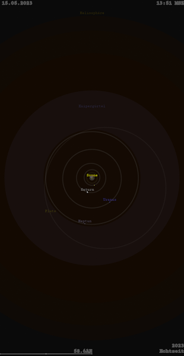
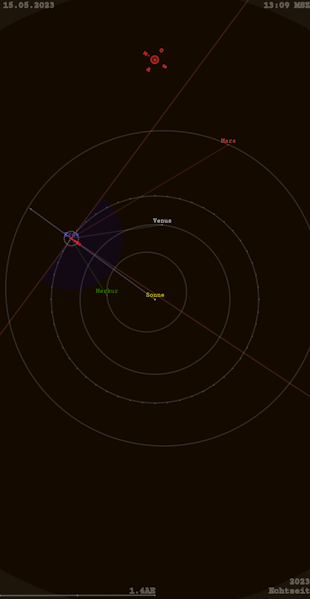
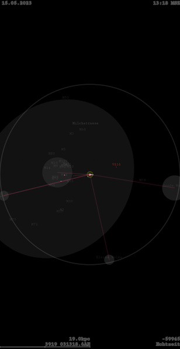
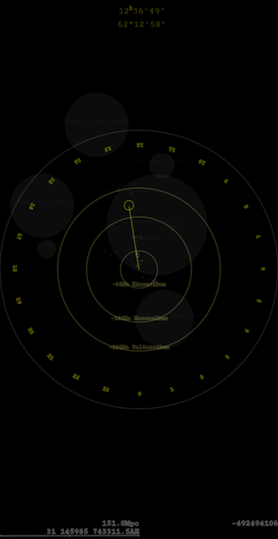

Solar System Simulation SSR. Android globus coelestis (celestial globe) and interactive calendar with Zodiac signs and timepiece covering the Solar System in the entire observable universe up to $r=14.25Gpc$ (c.f. the_great_debate).
Contains $n=69$ stars, $n=70$ nebulae and star clusters, most important Milky Way objects, $n=48$ galaxies and galaxy clusters (c.f. galaxies_tab) as well as the most well-known quasars. Full implementation of all $n=110$ Messier objects M (Messier, 1784), Inner Cloud (Hills, 1981), Oort Cloud (Oort, 1950) and more.
Further astronomical objects can be implemented by means of external definition files (ssr_*.dat). All objects of the Caldwell catalogue C (Moore and Pepin, 1995) as well as parts of the Herschel 400 catalogue (Mullaney, 1976) are included as ssr_Caldwell.dat and ssr_Herschel400.dat, see further ssr_orion.dat, ssr_local.dat, ssr_IC342_Maffei.dat and ssr_gw__.dat. For additional important astronomical catalogues see e.g. CN (Herschel, 1786), NGC (Dreyer, 1888), CGCG (Zwicky et al., 1961) or PGC (Paturel et al., 1989).
Solar System parameters of the Sun, planets and Moon are based on the current NASA Planetary Fact Sheets (Williams, 2025). Positions, distances and sizes of further objects are from Wikipedia sources (Wikipedia contributors, 2025), which can be traced back primarily to the SIMBAD astronomical database (Strasbourg astronomical Data Center, 2025), the VizieR Catalogue Service (see Ochsenbein et al., 2000) or the NASA/IPAC Extragalactic Database NED.
The Sun at $r=0.1au$ astronomical units:

Solar System with Asteroid and Kuiper Belts as well as Heliosphere at $r=58.6au$:

Inner Solar System with orbits, current rotation position of the Earth with time and position representation, as well as projection lines to the neighboring planets at $r=1.4au$:

Surrounding stars at $r=194.2pc$ and their relative positions to Earth, artificial horizon facing south:


The Milky Way at $r=19kpc$ with Magellanic Clouds, Sagittarius Dwarf Elliptical Galaxy Sag DEG (Ibata et al., 1994) and V838 Monocerotis (Brown et al., 2002):

Closer stars with their relative historical position and representation, from $r=14.5pc$ before the year 1976:

Interactive simulation to display distances between Earth, Moon and Sun with corresponding perspective projection lines:


Interactive simulation to compare sizes of stars:


Hubble deep field (HDF) located at a right ascension of 12h 36m 49s and a declination of +62° 12′ 58″ (see Ferguson, 1996):

Towards the HDF from a distance of $r=151Mpc$ within the surrounding galaxy clusters and Laniakea supercluster (Tully et al., 2014) with relative historical positions:

Most distant quasars on the edge of the observable universe at $r>9Gpc$ (see e.g. Wang et al., 2021):
Local star cluster within Orion–Cygnus Arm containing the signs of the Zodiac and surrounding nebulae seen from a distance of $r=3kpc$:
Object distances $r$ in parsec $pc$ are calculated from parallax $\pi_{O}$, given in milliarcseconds $mas$ with
$$r=(\frac{\pi_{O}}{1000})^{-1}, \pi_{O}=1000\cdot r^{-1}.$$
The luminosity distance $r=d_l$ in parsec $pc$ is given by
$$r = 10^{\frac{\mu}{5}+1}, \mu=\frac{5\cdot\log(r)-5\cdot\log(10)}{\log(10)}$$
with distance modulus $\mu$, defined by the difference between apparent magnitude $m$ and absolute magnitude $M$ as
$$\mu = m-M.$$
Object radii $r_{O}$ at a given distance $r$ are calculated via angular diameter $V°$ where
$$r_{O}=r\cdot\tan\frac{V}{2},r=r_{O}\cdot(\tan{\frac{V}{2}})^{-1},V=2\cdot\tan^{-1}\frac{r_{O}}{r}$$
with
$$V=\frac{V°}{180}\cdot\pi, V°=\frac{180\cdot V}{\pi}.$$
For more on photometry see e.g. Miles (2006) or Milone (2011), c.f. also Schrausser (2025).

This research has made use of the NASA/IPAC Extragalactic Database (NED), which is funded by the National Aeronautics and Space Administration and operated by the California Institute of Technology. ned.ipac.caltech.edu
Brown, N. J., Waagen, E. O., Scovil, C., Nelson, P., Oksanen, A., Solonen, J., & Price, A. (2002). Peculiar variable in Monoceros. International Astronomical Union Circular, 7785, 1. ui.adsabs.harvard.edu/abs/2002IAUC.7785....1B
Dreyer, J. L. E. (1888). A New General Catalogue of Nebulae and Clusters of Stars, being the Catalogue of the late Sir John F. W. Herschel, Bart., revised, corrected, and enlarged. Memoirs of the Royal Astronomical Society, 49, 1-237. ui.adsabs.harvard.edu/abs/1888MmRAS..49....1D, archive.org/download/newgeneralcatalo00dreyrich
Ferguson, H. (1996). The Hubble Deep Field – field selection. Space Telescope Science Institute.
Herschel, W. (1786). Catalogue of One Thousand New Nebulae and Clusters of Stars. Philosophical Transactions of the Royal Society of London, 76, 457-499. DOI:10.1098/rstl.1786.0027
Hills, J. G. (1981). Comet showers and the steady-state infall of comets from the Oort Cloud. Astronomical Journal, 86, 1730–1740. DOI:10.1086%2F113058
Ibata, R. A., Gilmore, G., & Irwin, M. J. (1994). A dwarf satellite galaxy in Sagittarius. Nature, 370, 194-196. DOI:10.1038%2F370194a0
Messier, C. (1784). Cataloque des nébuleuses et amas d'étoiles, La Connaissance des temps, ou connaissance des mouvements célestes, pour l'année bissextile 1784. Paris, Imprimerie royale, 1781, p. 227-267. www.messier-objects.com
Miles, R. (2006). A light history of photometry: from Hipparchus to the Hubble Space Telescope. Journal of the British Astronomical Association, 117(4), 172—186. ui.adsabs.harvard.edu/full/2007JBAA..117..172M
Milone, E. F. (2011). Astronomical Photometry: Past, Present and Future. New York: Springer. books.google.com/books/about/Astronomical_Photometry.html?id=Ps_6zjUCR3wC
Moore, P., & Pepin, M. B. (1995). Beyond Messier: The Caldwell Catalogue. Sky and Telescope Vol. 90, Cambridge, MA. www.messier.seds.org/xtra/similar/caldwell.html
Mullaney, J. (1976). Letter to Sky & Telescope. Sky & Telescope, 235, Cambridge, MA. web.archive.org/web/20071001004725
Ochsenbein, F., Bauer, P., & Marcout, J. (2000). The VizieR database of astronomical catalogues. Astronomy and Astrophysics Supplement Series, 143, 23–32. DOI:10.1051/aas:2000169. S2CID 17377096
Oort, J. H. (1950). The Structure of the Cloud of Comets Surrounding the Solar System and a Hypothesis Concerning its Origin. Bulletin of the Astronomical Institutes of the Netherlands, 11, 91-110. ui.adsabs.harvard.edu/abs/1950BAN....11...91O/abstract
Paturel, G., Fouque, P., Bottinelli, L., & Gouguenheim, L. (1989). An Extragalactic Database. I. The Catalogue of Principal Galaxies. Astronomy and Astrophysics, Suppl. Ser., 80 (November): 299–315. https://ui.adsabs.harvard.edu/abs/1989A&AS...80..299P
Schrausser, D. G. (2025). Schrausser/HP_Prime_MATH: 3.0. Zenodo. June 2025. https://doi.org/10.5281/zenodo.14721085
Strasbourg astronomical Data Center. (2025). SIMBAD, Set of Identifications, Measurements and Bibliography for Astronomical Data. CDS. STRASBOURG, France. cdsweb.u-strasbg.fr/Simbad.html
Tully, R. B., Courtois, H., Hoffman, Y., & Pomarède, D. (2014). The Laniakea supercluster of galaxies. Nature, 513, 71-73. DOI:10.1038/nature13674
Wang, F., et al. (2021). A Luminous Quasar at Redshift 7.642. The Astrophysical Journal, 907(1), L1. DOI:10.3847%2F2041-8213%2Fabd8c6
Wikipedia contributors. (2025). Wikipedia, The Free Encyclopedia. Retrieved June 2025 from www.wikipedia.org
Williams, D. R. (2025). Planetary Fact Sheet. NASA Goddard Space Flight Center. nssdc.gsfc.nasa.gov/planetary/factsheet
Zwicky, F., Herzog, E., & Wild, P. (1961). Catalogue of Galaxies and of Clusters of Galaxies. 1st ed. Pasadena: California Institute of Technology. https://authors.library.caltech.edu/records/5mzw0-jg109
SSR
Dietmar Gerald Schrausser03.07.2025